Family
LEPISOSTEIDAE (Gars)
Species
Lepisosteus osseus (Linnaeus, 1758)
Common Name
Longnose Gar
Distribution
Where found: Lake Michigan, Lake Huron, Lake Erie, Lake Ontario
Native or non-native species: Native
Description
Egg (spawning to hatching)
Appearance and features
Egg color: Brown, greenish, gray, slate, green, yellowish or yellow, creamy
Other features: Demersal or adhesive
Attachment disc presence/absence: Present
Egg meristics
Egg diameter (mm): 2.1-5.5 mm
Spawning substrate location, features
Shallow water or shoals: Shallow, grassy areas of smaller streams and shoals or shallow, warm water where vegetation is abundant
Shoreline / nearshore: Windswept shorelines and rocky points of lakes
Spawning strategies
Broadcast - demersal: Over aquatic plants, grass, debris and
vegetation, over dead vegetation and algal mats or over flooded weeds,
grass, algae and bare rock
Other Spawning features
Spawning behavior: No parental care is given
Spawning season: May, June or July
Fecundity: 1110-77156, 4273-59422
Water temperature at spawning (degC): 19.0-21.0 degC, 17.0 degC
Incubation
Incubation period (days): 5-6, 7-9
Incubation temperature (degC): 18.9-21.2 degC
Yolk Sac Larvae - YSL (hatching to complete absorption of yolk)
Appearance and features (body)
Body shape: Not elongate, not eel-shaped
Gill openings on each side: Single
Adhesive disc on snout: Present with papillae
Chin barbels: Absent or not well developed
Pectoral fin bud and ray development: Pectoral fin buds large or prominent
Appearance and features (head and mouth)
Mouth presence: Absent, barely evident (not formed), or not well developed
YSL Meristics (mm)
Total Length (TL) of yolk-sac larvae (mm): 8.0-15.0 mm
Total length of recently hatched larvae (mm): 8.0-10.0 mm
Additional YSL features based on size
8-15mm
Pigmentation: body colorless (newly hatched); minute melanophores on dorsum of gut in later development; entire body covered with small melanophores, more numerous on dorsum and head (3 days old); melanophores becoming more dense around dorsum, over intestine (5 days old); venter yellow-gray; melanophores becoming more dense around head (5 days old); concentrations of pigment in finfold indicate position of caudal, dorsal and anal fins (11mm), becoming more pronounced (15mm); location of median fins marked by dense patches of melanophores;
yolk opaque or blue-gray (newly hatched); upper edge of yolk sac covered with melanophores;
melanophores becoming more dense over dorsum of yolk sac (5 days old)
Body: opercula extend over base of pectoral buds; opercular folds meet ventrally; choroid fissure persisting
Fins: median and pelvic fins undeveloped (11mm); pectoral buds prominent as vertical ridges;
pectoral fin bases appear horizontal on side of body (15mm); pelvic buds present posterior to yolk sac
Head and mouth: eye poorly developed (newly hatched); considerable elongation of preoral part of head gives appearance of a snout with terminal suctorial disc; mouth reduced to a slit; suctorial disc prominent on snout; central papillae of suctorial disc arranged in groups
Larvae (complete absorption of yolk to development of full complement of adult fin rays and absorption of finfold)
Appearance and features (body)
Body shape: Not elongate, not eel-shaped
Gill openings on each side: Single
Chin barbels: Absent or not well developed
Appearance and features (head and mouth)
Teeth: Visible
Larvae Meristics
Total length (mm): 20.0-41.0 mm
Larvae Morphometry (%)
Preanal length (as % of Total Length): (66-)67-69 %
Body depth (greatest) (as % of Total Length): 7-10.5 %
Eye diameter (as % of Total Length): 3.3 %
Pigmentation
Body: Pigmented
(by George R. Heufelder, from "Identification of Larval Fishes of the Great Lakes with Emphasis on the Lake Michigan Drainage," N. Auer editor, 1982)
The gars belong to a primative family having both living representatives as well as members known only from fossil record. The Lepisosteidae is comprised of 16 species from 2 genera, Lepisosteus and Atractosteus (Wiley 1976). Fossil records indicate that gars inhabited North America, Central America, Europe, India and Africa. Living representatives, however, are restricted to the western hemisphere from Costa Rica to southern Canada. Of the five living gars of North America, three are known from the Great Lakes basin. The longnose gar, C. osseus, occurs in the drainages of all of the Great Lakes, although to a limited extent in Lake Superior, while the shortnose gar, C. platystomus, and spotted gar, L. oculatus, have a more restricted range in the basin.
The gars are unique among North American fishes, being characterized by a long, attenuated snout with numerous teeth, abbreviated heterocercal tail and overlapping ganoid scales. The body is long and somewhat tubular. Spawning takes place in the spring in shallow vegetated areas. Eggs are broadcast and adhere to the underlying vegetation and substratum. No parental care is given.
With the exception of L. osseus, very little has been published regarding the larval development of gars. Larval gar superficially resemble the larvae of esocids, but can readily be distinguished by the presence of a “caudal appendage,” which is the upturned distal portion of the notochord, appearing as a large upper lobe of the caudal fin. Larval
gar remain attached to vegetation by an adhesive disc on the tip of the snout and are relatively inactive until the yolk is absorbed.
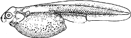Lepisosteus osseus, longnose gar. Yolk sac larva, size unknown. Wild-caught, Kerr 1919 (by permission of MacMillan, London & Basingstoke), delineated by J. Ellis
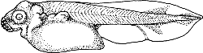
Lepisosteus osseus, longnose gar. Yolk sac larva, 11mm. Laboratory-reared, New York, Balfour and Parker 1882, delineated by J. Ellis
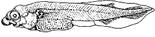
Lepisosteus osseus, longnose gar. Yolk sac larva, 15mm.
Laboratory-reared, New York, Balfour and Parker 1882, delineated by J.
Ellis
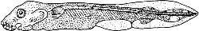
Lepisosteus osseus, longnose gar. Yolk sac larva, size unknown.
Laboratory-reared, New York, Agassiz 1879, delineated by M.A. Cole
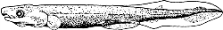
Lepisosteus osseus, longnose gar. Larva, size uknown. Wild-caught, Kerr
1919 (by permission of MacMillan, London & Basingstoke), delineated
by M.A. Cole
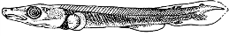
Lepisosteus osseus, longnose gar. Larva, 18mm. Wilder 1877, delineated
by M.A. Cole (reprinted with permission from Popular Science 1877, D.
Appleton and Company)
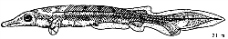
Lepisosteus osseus, longnose gar. Larva, 21mm. Laboratory-reared, Agassiz 1879, delineated by M.A.Cole
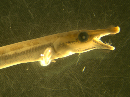
Lepisosteus osseus, longnose gar. Larva, 25mm. St. Clair River, USGS Great Lakes Science Center 2010
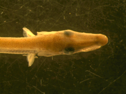
Lepisosteus osseus, longnose gar. Larva dorsal head, 25mm. St. Clair River, USGS Great Lakes Science Center 2010
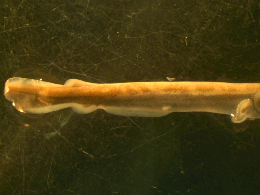
Lepisosteus osseus, longnose gar. Larva body, 25mm. St. Clair River, USGS Great Lakes Science Center 2010
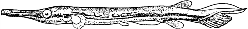
Lepisosteus osseus, longnose gar. Larva, 41mm. Wild-caught, Lake Erie, Fish 1932
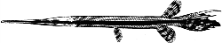
Lepisosteus osseus, longnose gar. Juvenile, 100mm. Wild-caught, Pennsylvania, Fowler 1945